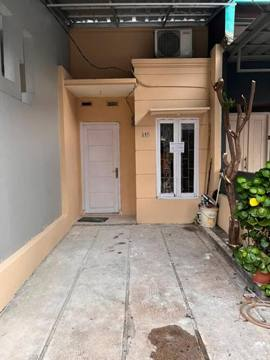
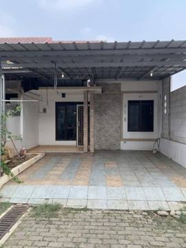
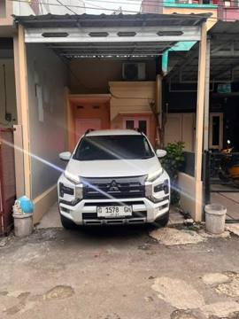
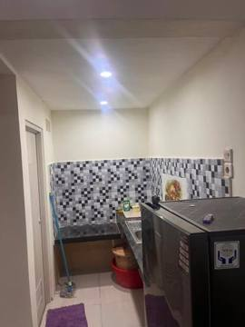
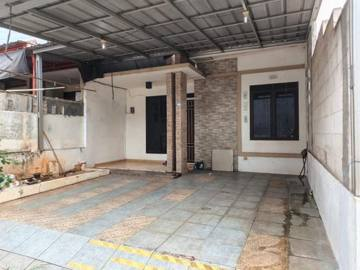
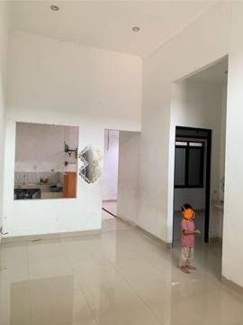
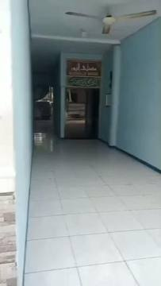
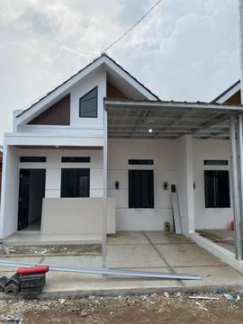

Shortlist rumah untuk disurvei
Diperbarui 17 November 2026 dari 2.576 rumah yang sudah terkumpul (rumah123, post Threads, dan catatan survei kami). Pembaruan ini menambah iklan rumah123 tiga hari terakhir, 39 pesan DM baru, sembilan rumah yang kalian kirim sendiri, data sekolah, dan aturan cicil tanpa bunga. Ini bahan diskusi keluarga, bukan nasihat keuangan dan bukan penilaian properti resmi.
Intinya
Hasilnya masih sedikit. Dari 2.576 rumah, 16 lolos semua kriteria wajib tanpa ada yang masih belum jelas. Enam ada di wilayah yang kalian sebut: 2 di Jakarta dan 4 di Kota Bekasi. Sepuluh sisanya di Depok, Bogor, dan Tangerang.
Lima rumah teratas tidak berubah. Rumah baru yang lolos adalah salah satu kiriman kalian: rumah 2 lantai di Semanan, Kalideres (nomor 15, 650 jt). Rumah itu lolos karena penjualnya menerima cicilan pribadi tanpa bunga, dan aturan harganya sekarang memberi ruang sampai 700 jt untuk rumah seperti itu (lihat bagian "Cicil langsung tanpa bunga").
Dari enam rumah itu hanya Kansa Residence di Kramat Jati (390 jt) yang harganya di bawah 400 jt.
Sembilan rumah kiriman kalian sudah masuk. Dua sudah ada di daftar sebelumnya (nomor 2 dan 10). Tujuh lainnya diberi nomor 11 sampai 17. Satu lolos semua, empat masih perlu dicek, dan dua gugur karena harganya di atas 500 jt tanpa cicilan.
Peta sekarang punya layer sekolah SD, SMP, dan SMA dengan tanda sekolah favorit. Klik rumah untuk melihat sekolah dalam radius 2 km. Tabel dan daftar di peta bisa diurutkan menurut harga, jarak ke Manggala Wanabakti, jarak ke sekolah paling favorit, atau waktu ke gerbang tol.
Tiga hal yang paling membatasi:
- Harga. 1.783 dari 2.576 rumah gugur di sini (1.649 di atas 500 jt tanpa cicilan tanpa bunga, 93 tanpa harga, 36 over kredit, 5 bukan harga rumah).
- Harus di dalam cluster atau komplek. Dari 793 rumah yang lolos harga, 264 gugur di sini. Di Jakarta kriteria ini yang paling keras: dari 69 rumah Jakarta yang lolos harga, 52 bukan di komplek.
- Lokasi iklan tidak tepat. Ini bukan kriteria, tetapi inilah yang membuat daftar pasti jadi pendek. Dari 286 rumah yang belum gugur, 235 titiknya hanya titik tengah daerah, jadi banjir dan waktu tempuhnya belum bisa dipastikan.
Kriteria 25 menit ke gerbang tol ternyata tidak terlalu membatasi di Jakarta Timur dan Kota Bekasi, karena gerbang tol di sana rapat. Yang perlu kalian tahu: 25 menit ke gerbang bukan berarti dekat ke kantor. Dari kelima rumah teratas, perjalanan sampai Manggala Wanabakti pada Senin pukul 06.30 butuh 45 sampai 80 menit menurut Google Maps.
Kalau mau daftar yang lebih panjang, kriteria yang paling layak dilonggarkan adalah komplek untuk rumah di Jakarta (lihat bagian "Kriteria yang layak dilonggarkan").
Lima rumah yang lolos semua kriteria wajib
Nomor 15 (Semanan, kiriman kalian) juga lolos semua sejak 17 November. Rinciannya ada di bagian "Rumah yang kalian kirim".
Urut dari waktu tempuh terpendek ke gerbang tol. "Model" adalah waktu OSRM dikali faktor macet pagi 2,4. "Google" adalah angka Google Maps untuk berangkat Senin 16 November 2026 pukul 06.30.
| No | Rumah | Harga | LT / LB | Gerbang tol arah Senayan | Ke gerbang (model / Google) | Sampai kantor (Google) | Badan tol terdekat |
|---|---|---|---|---|---|---|---|
| 1 |  Kansa Residence, Kramat Jati, Jakarta Timur | 390 jt | 36 / tidak ditulis | Gedong 2 (Lingkar Luar) | 13 / 12 menit | sekitar 50 menit | 1,2 km |
| 2 |  Mini cluster Kemangsari, Jaticempaka, Pondok Gede Mini cluster Kemangsari, Jaticempaka, Pondok Gede | 475 jt (di atas 400 jt) | 53 / 53 | Pondok Gede Barat 2 (Jakarta-Cikampek) | 13 / 14 menit | sekitar 45 menit | 1,1 km |
| 3 |  Cluster Prima Pedurenan 5, Jatiluhur, Jatiasih | 500 jt (di atas 400 jt) | 89 / 49 | Jati Asih 2 (Lingkar Luar) | 14 / 16 menit | sekitar 65 menit | 2,1 km |
| 4 | Pondok Indah Jatisari, Jatiasih | 500 jt (di atas 400 jt) | 90 / 70 | Jati Asih 2 (Lingkar Luar) | 16 / 18 menit | sekitar 70 menit | 2,9 km |
| 5 |  Dukuh Zamrud, Kota Legenda, Mustikajaya Dukuh Zamrud, Kota Legenda, Mustikajaya | 495 jt (di atas 400 jt) | 78 / 50 | Tambun (Jakarta-Cikampek) | 19 / 22 menit | sekitar 80 menit | 2,7 km |
1. Kansa Residence, Kramat Jati (390 jt)


- Harga 390 jt, bisa nego. Satu-satunya di daftar ini yang di bawah 400 jt, dan satu-satunya di Jakarta.
- Luas tanah 36 m², tepat di batas minimal. Luas bangunan tidak ditulis. Satu lantai, lantai dua sudah dicor dan tangganya sudah ada. SHM.
- Lokasi: Jl. H. Taiman Ujung, Kampung Tengah, Kramat Jati. Titiknya titik komplek di Google Maps ("Kansa Residence"), bukan titik rumahnya.
- Tol: gerbang Gedong 2 di Lingkar Luar, 2,8 km. Model 13 menit, Google 12 menit.
- Banjir: RT 006/RW 007 Kelurahan Tengah tidak punya catatan banjir 2021 sampai 2024 di data BPBD DKI. RT banjir terdekat 439 m. Penjual menulis lingkungan tidak banjir (klaim penjual).
- Carport: di foto iklan ada mobil terparkir di bawah kanopi depan rumah.
- Badan tol terdekat 1,2 km (Lingkar Luar).
- Bukan rumah baru dari developer. Dijual pemilik.
- Iklan: https://www.threads.com/@bercuaca/post/De1LV8VmM_u (post 23 Oktober 2026).
- Alasan: satu-satunya rumah di Jakarta dan satu-satunya di bawah 400 jt yang lolos semua kriteria.
- Cek saat survei: ukuran tanah yang sebenarnya (36 m² itu pas di batas), nomor RT dan RW di alamat, apakah mobil kalian muat di depan tanpa menutup jalan, kondisi cor lantai dua, dan apakah rumah masih dijual (post sudah tiga minggu).
2. Mini cluster Kemangsari, Jaticempaka (475 jt)


- Harga 475 jt nego, penjual menulis cash only. Di atas 400 jt.
- LT 53 / LB 53, 2 kamar tidur, 1 kamar mandi, bangunan 2017. SHM, IMB.
- Lokasi: Kampung Kemangsari, Jaticempaka, Pondok Gede. Titik yang dipakai adalah titik temu survei di iklan (Indomaret Kampung Kemang Sari). Rumahnya ada di sekitar titik itu.
- Tol: gerbang Pondok Gede Barat 2 di tol Jakarta-Cikampek, 3,5 km. Model 13 menit, Google 14 menit (rentang yang biasa terjadi 10 sampai 20 menit).
- Banjir: di luar zona bahaya banjir BNPB. Sungai kecil terdekat 627 m dan tanah rumah sekitar 8 m lebih tinggi. Catatan: di kelurahan yang sama ada titik yang banjir pada Februari 2021 (Antilope, Essence Park, sekitar kantor kelurahan), jadi tanyakan warga.
- Carport: kolom carport di iklan rumah123 terisi, dan di foto ada teras beratap di depan rumah. Jalan cluster di foto hanya selebar satu mobil.
- Badan tol terdekat 1,1 km.
- Bukan rumah baru dari developer.
- Iklan: https://www.rumah123.com/properti/bekasi-jatiwaringin/rumah-murah-dlm-mini-cluster-di-jaticempaka-dkt-jtbening-bekasi-hos16335281/ (masih tayang 15 November 2026).
- Alasan: paling dekat ke kantor di antara rumah Bekasi (sekitar 45 menit), dan dekat gerbang yang selama ini kalian incar.
- Cek saat survei: apakah teras depan benar-benar muat mobil (bangunan memenuhi tanah), lebar jalan masuk dari jalan besar, riwayat banjir blok itu, dan apakah ada gerbang serta penjaga.
3. Cluster Prima Pedurenan 5, Jatiluhur (500 jt)


- Harga 500 jt, dijual pemilik tanpa perantara. Di atas 400 jt.
- LT 89 / LB 49 menurut iklan ("aslinya lebih"). SHM.
- Lokasi: Jl. H. Dehir, Jatiluhur, Jatiasih. Titik dari tautan Google Maps yang dibagikan penjual, jadi ini yang paling tepat di antara lima.
- Tol: gerbang Jati Asih 2 di Lingkar Luar, 3,9 km. Model 14 menit, Google 16 menit.
- Banjir: di luar zona bahaya banjir BNPB. Sungai kecil terdekat 573 m, tanah rumah sekitar 6 m lebih tinggi. Catatan: "Perum Jatiluhur" di Jatiasih masuk daftar banjir BPBD Kota Bekasi pada Maret 2025 (150 cm). Saya tidak bisa memastikan seberapa jauh perumahan itu dari cluster ini.
- Carport: di foto ada carport berkanopi, jalan cluster berpaving.
- Badan tol terdekat 2,1 km.
- Bukan rumah baru dari developer.
- Iklan: https://www.threads.com/@afifsoegiharto/post/DftDolIGBOS (post 14 November 2026).
- Alasan: tanah paling luas kedua, lokasi paling pasti, dan masih ada sisa tanah untuk halaman.
- Cek saat survei: jarak ke Perum Jatiluhur yang pernah banjir, kondisi plafon (di satu foto terlihat rusak), dan luas tanah di sertifikat.
4. Pondok Indah Jatisari, Jatiasih (500 jt)
- Harga 500 jt. Di atas 400 jt.
- LT 90 / LB 70, satu lantai, 2 kamar tidur, 2 kamar mandi. SHM. Komplek satu pintu.
- Lokasi: Komplek Pondok Indah Jatisari, Jatiasih. Titik komplek dari Google Maps.
- Tol: gerbang Jati Asih 2 di Lingkar Luar, 4,9 km. Model 16 menit, Google 18 menit.
- Banjir: di luar zona bahaya banjir BNPB. Sungai kecil terdekat 618 m, tanah rumah sekitar 12 m lebih tinggi.
- Carport: iklan menulis carport 1 mobil.
- Badan tol terdekat 2,9 km.
- Bukan rumah baru dari developer.
- Iklan: https://www.threads.com/@grahasp23/post/DftgDAhErmV (post 14 November 2026). Post ini tanpa foto di data kami.
- Alasan: tanah paling luas, ada sisa sekitar 20 m² untuk halaman, dan posisinya paling tinggi terhadap sungai.
- Cek saat survei: kondisi rumah (belum ada foto), jalan dari komplek ke Jl. Raya Jatiasih pada jam berangkat, dan iuran komplek.
5. Dukuh Zamrud, Kota Legenda (495 jt)


- Harga 495 jt, rumah123 menandai harganya pernah turun. Di atas 400 jt.
- LT 78 / LB 50, 2 kamar tidur, 1 kamar mandi, baru direnovasi. SHM. One gate, penjaga 24 jam.
- Lokasi: Dukuh Zamrud, Kota Legenda, Mustikajaya. Titik dari pin penjual di rumah123.
- Tol: gerbang Tambun di tol Jakarta-Cikampek, 6,2 km. Model 19 menit, Google 22 menit. Ini yang paling jauh dari kantor (sekitar 80 menit).
- Banjir: di luar zona bahaya banjir BNPB. Tetapi Kali Pete hanya 216 m dan ketinggian tanahnya hampir sama dengan sungai itu menurut data ketinggian yang kasar. Perumahan lain di Mustikajaya banjir pada 2021. Penjual menulis bebas banjir (klaim penjual).
- Carport: kolom carport di iklan terisi, dan di foto ada kanopi di depan rumah. Jalan depan lebar.
- Badan tol terdekat 2,7 km.
- Bukan rumah baru dari developer.
- Iklan: https://www.rumah123.com/properti/bekasi-mustikajaya/dijual-rumah-dukuh-zamrud-kota-legenda-mustikajaya-bekasi-timur-hos19252497/ (masih tayang 15 November 2026).
- Alasan: lolos semua kriteria dengan lokasi yang pasti, tetapi ini pilihan terakhir karena paling jauh.
- Cek saat survei: tanyakan warga apakah Kali Pete pernah meluap ke blok itu, dan coba sendiri perjalanan pagi ke gerbang Tambun.
Lima cadangan yang tinggal sedikit lagi
Rumah-rumah ini belum gugur, tetapi ada kriteria wajib yang belum terbukti. Jangan anggap lolos sebelum hal itu dicek.
| No | Rumah | Harga | LT / LB | Gerbang tol | Ke gerbang (model / Google) | Sampai kantor (Google) | Yang belum terbukti |
|---|---|---|---|---|---|---|---|
| 6 |  Kodau V Ambarapura, Jatimekar, Jatiasih Kodau V Ambarapura, Jatimekar, Jatiasih | 450 jt (di atas 400 jt) | 63 / 36 | Jati Warna 1 (Lingkar Luar) | 10 / 10 menit | sekitar 55 menit | Rumah baru, reputasi developer |
| 7 |  Komplek Bintara Jaya, Bekasi Barat | 420 jt (di atas 400 jt) | tidak ditulis | Bintara (Lingkar Luar) | 10 / 8 menit | sekitar 45 menit | Luas tanah, carport, jarak ke tol |
| 8 |  Raisya Pro Residence 9, Kranggan Raisya Pro Residence 9, Kranggan | mulai 385 jt | mulai 62 | Jatikarya 2 (Cimanggis-Cibitung) | 16 / 14 menit | sekitar 80 menit | Rumah baru, reputasi developer |
| 9 |  Raisya Pro Residence 11, Jatimurni | mulai 400 jt | 75 sampai 98 / 36 atau 45 | Jati Warna 1 (Lingkar Luar) | 18 / 18 menit | sekitar 70 menit | Rumah baru, reputasi developer |
| 10 |  Cluster kecil di Cilangkap, Jakarta Timur Cluster kecil di Cilangkap, Jakarta Timur | 470 jt (di atas 400 jt) | 70 / 60 | Setu (Lingkar Luar) | 21 / 14 menit | sekitar 65 menit | Lokasi tepat, banjir, surat masih AJB |
Catatan per rumah:
- 6. Kodau V Ambarapura. Rumah baru tahap 6 di dalam komplek TNI AU. Penjual menjanjikan gratis AJB, BPHTB, dan SHM. Di luar zona bahaya banjir BNPB, 1,1 km dari badan tol. Iklannya dari Juli 2026, jadi mungkin sudah habis. Nama badan usaha developernya tidak ditulis. Iklan: https://www.threads.com/@jualrumah_jatiasih/post/Da7rby6GSn3
- 7. Komplek Bintara Jaya. Iklan hanya menulis siap huni, SHM, akses mobil, tidak pernah banjir, "akses tol Bintara dan nempel Kalimalang". Titik yang dipakai adalah Bintara Jaya Permai (anggapan saya). Pusat komplek itu 741 m dari tol Lingkar Luar. Kalau rumahnya memang menempel Kalimalang, berarti dekat tol layang Becakayu. Bisa jadi ini perumahan Bintara yang kalian maksud terlalu dekat tol. Dua perumahan tetangganya, Puri Bintara dan Mas Naga, tercatat banjir pada 2021 dan Januari 2026. Iklan: https://www.threads.com/@alhafidz_quran/post/DfuXPlvgEdg
- 8 dan 9. Raisya Pro Residence. Developernya memakai nama Raisya Propertindo. Di Google Maps ada cluster bernomor 3, 5, 9, 11, dan 12 di sekitar Kranggan dan Jatimurni, jadi mereka memang sudah membangun beberapa cluster. Saya tidak menemukan ulasan independen maupun berita keluhan. Itu bukan bukti bahwa developernya baik. Keduanya di luar zona bahaya banjir BNPB dan hampir 3 km dari badan tol. Harga "mulai" berarti unit termurah. Iklan: https://www.threads.com/@yusuf_raisya_property/post/Dfq7RX7ATE6 dan https://www.threads.com/@raisyapropertindo/post/Dfo4rsEE0aD
- 10. Cilangkap. Satu-satunya cadangan di Jakarta. One gate isi 8 rumah, akses mobil, di foto ada mobil terparkir di depan. Lokasi tepatnya belum diketahui (iklan: 3 menit dari Mabes TNI). Di titik perkiraan, 3 dari 24 RT dalam 500 m tercatat banjir 2021 sampai 2024. BPBD DKI juga mencatat 5 RT di Cilangkap terendam pada 22 Maret 2026 (Republika). Surat masih AJB, lihat bagian berikut. Iklan: https://www.threads.com/@mr.yoginugraha/post/DfbncffIBEX
Rumah yang kalian kirim (17 November)
Sembilan tautan yang kalian kirim sudah masuk. Nomor 2 (Kemangsari) dan 10 (Cilangkap) memang sudah ada di daftar. Tujuh lainnya saya beri nomor 11 sampai 17, dan semuanya tetap dihitung tol, banjir, dan sekolahnya walaupun gugur di saringan lain. Di peta, nomornya berwarna ungu.
| No | Rumah | Harga | LT / LB | Status | Gerbang tol (model / Google) | Banjir | Yang masih perlu dicek |
|---|---|---|---|---|---|---|---|
| 11 | Cluster Aldira 2, Jatisari, Jatiasih | 350 jt | 50 / 70, 2 lantai | perlu dicek | Jati Asih 2, 23 menit / belum dicek | di luar zona bahaya BNPB, 19 m di atas Kali Cikeas | akses mobil, surat masih AJB |
| 12 | Cluster mini di Kalisari, Ciracas | 550 jt (di atas 500 jt) | 53 / 50 | gugur (harga) | Gedong 2, 9 menit | 0 dari 47 RT sekitar tercatat banjir (titik perkiraan) | lokasi tepat |
| 13 | Cluster Arsa 2, Petukangan Selatan, Pesanggrahan | 485 jt (di atas 400 jt) | sekitar 45 / 36 | perlu dicek | Ciledug 2, 6 menit | RT tanpa catatan banjir | rumah belum dibangun, carport, developer |
| 14 | Lavender Crown Residence IV, Jatiasih | 320 jt | 64 / 48 | perlu dicek | Jati Asih 2, 16 menit | di luar zona bahaya BNPB, 11 m di atas sungai kecil terdekat | akses mobil |
| 15 | Komplek Alastua, Semanan, Kalideres, Jakarta Barat | 650 jt, bisa cicil pribadi tanpa bunga | 40 / 88, 2 lantai | lolos semua | Buaran Indah 1, 26 / 16 menit | RT tanpa catatan banjir, RT banjir terdekat 1,4 km | DP dan lama cicilan |
| 16 | Cluster di Pekayon, Bekasi Selatan | 530 jt (di atas 500 jt) | 52 / tidak ditulis | gugur (harga) | Bekasi Barat 2, 9 menit | indeks bahaya BNPB 0,3 (titik perkiraan) | lokasi tepat |
| 17 | AS Cluster Jatisari (masuk dari Jl. Diman) | 350 jt | 60 / 38 | perlu dicek | Jatiwarna 2, 21 menit | di luar zona bahaya BNPB | akses mobil |
Catatan:
- 11. Aldira 2. Harga turun dari 550 jt menjadi 350 jt net, tunai, karena pemilik pulang kampung. Furnitur ikut. Penjual menulis bebas banjir dan surat masih AJB. Rumah 2 lantai, jadi lantai bawah bisa jadi carport. Ini yang paling jauh dari gerbang tol di antara kiriman kalian. Iklan: https://www.threads.com/@echa_share/post/DfcfjxxE8bS
- 12 dan 16. Kalisari dan Pekayon sama-sama di dalam cluster, akses mobil, dan ada carport, tetapi harganya 530 dan 550 jt tanpa tawaran cicilan. Keduanya dekat gerbang tol (9 menit). Kalau harga bisa turun ke 500 jt, keduanya langsung masuk perlu dicek. Iklan: https://www.threads.com/@mulaimenatahidupp/post/DfuVunek7WD dan https://www.threads.com/@yatiyahmin/post/DfKTwnCEumC
- 13. Arsa 2. Post baru ini sama dengan unit Arsa 2 yang sudah ada sejak 15 November. Harga 550 jt di iklan adalah kavling 100 m². Rumah tipe 36 di atas tanah sekitar 45 m² harganya 485 jt. Penjual menulis jalannya bisa dilewati mobil kecil seperti Wuling, jadi mobil besar mungkin sulit. Ini satu-satunya rumah di daftar yang jaraknya ke Manggala Wanabakti hanya 13,5 km. Iklan: https://www.threads.com/@rizky.azhr/post/DfzNPRDgbsd
- 14. Lavender Crown IV. Harga paling murah di kiriman kalian (320 jt nego). Teras sudah berkanopi. Iklan menyebut 3 menit ke SDN Jatiasih. Iklan: https://www.threads.com/@chdilss/post/Dfy7ORgkqRI
- 15. Semanan. Penjual yang sama memasang rumah ini dua kali: 600 jt-an di satu post dan 650 jt di balasan post yang kalian kirim. Bisa dicicil pribadi tanpa bunga, tetapi besar DP dan lama cicilannya belum ditulis. Model menghitung 26 menit ke gerbang Buaran Indah 1, Google Maps 16 menit (Senin 06.30), jadi saya pakai angka Google. Sampai kantor sekitar 50 menit menurut Google. Jakarta Barat jauh dari wilayah yang biasa kalian cari, dan sekolah paling favorit terdekat ada lebih dari 30 km. Iklan: https://www.threads.com/@lysaaple/post/DftX0fYGLPe
- 17. AS Cluster Jatisari. Sama dengan rumah 350 jt yang sudah ada di daftar. Penjual menulis lokasinya dataran tinggi dekat Kranggan dan tidak pernah banjir. Aslinya 2 kamar, sekarang 1 kamar besar. Iklan: https://www.threads.com/@sendyalbeziano/post/DfgKWYTE8k8
Sekolah di sekitar rumah
Data sekolah diambil dari peta sekolah kita (folder 13). Peta itu hanya mencakup Jakarta Timur dan Bekasi bagian barat, jadi untuk rumah di luar area itu saya tambahkan sekolah dari data Kemendikdasmen (datawan-labs) dalam 3 km dari rumah. Yang dimuat hanya SD, MI, SMP, MTs, SMA, dan MA.
Tanda favorit di peta:
- Cincin emas, paling favorit: SMA peringkat UTBK 2022 nasional 1 sampai 30 (SMAN 81, 21, 61, 48), 3 besar SMA Kota Bekasi (SMAN 3 dan 5 Bekasi), dan SMP TKA 2026 teratas DKI (SMPN 49 dan 252).
- Cincin ungu, favorit: SMA lain di daftar UTBK top 1000 atau daftar SMA terbaik Kota Bekasi, dan SMP dari daftar favorit media.
- Cincin pink, sering direkomendasikan di Threads (3 sebutan atau lebih). Ini satu-satunya tanda untuk SD, karena SD tidak punya peringkat resmi.
- Tanpa cincin: tidak ada data peringkat. Bukan berarti sekolahnya jelek.
Soal zonasi: Kota Bekasi dan Jawa Barat mengurutkan pendaftar SD dan SMP dengan jarak garis lurus dari rumah. DKI memakai wilayah RT dan kelurahan, bukan jarak. Karena itu radius di peta digambar garis lurus (pilihan 1, 1,5, atau 2 km). Radius 2 km itu patokan kasar. Batas yang sebenarnya tergantung jumlah pendaftar tiap tahun.
| No | Rumah | SD negeri terdekat | Sekolah favorit dalam 2 km | Sekolah paling favorit terdekat (jalan) |
|---|---|---|---|---|
| 1 | Kansa Residence | SDN Tengah 07 Pagi, 0,4 km | SMPN 49 (1,2 km), SMAN 62 (1,3 km), SMAN 48 (1,9 km) | SMPN 49 Jakarta, 5,3 km |
| 2 | Kemangsari | SDN Jatibening Baru VII, 0,5 km | SMAN 5 Bekasi (1,1 km) | SMAN 5 Bekasi, 1,6 km |
| 3 | Prima Pedurenan 5 | SDN Jatiluhur 4, 0,3 km | tidak ada | SMAN 3 Bekasi, 9,3 km |
| 4 | Pondok Indah Jatisari | SDN Jati Sari 2, 0,8 km | SMAN 11 Bekasi (1,4 km) | SMAN 3 Bekasi, 10,4 km |
| 5 | Dukuh Zamrud | SDN Padurenan VI, 0,6 km | tidak ada | SMAN 3 Bekasi, 12,5 km |
| 6 | Kodau V Ambarapura | SDN Jatimakmur II, 0,2 km | SMAN 16 Bekasi (1,9 km) | SMAN 5 Bekasi, 4,3 km |
| 7 | Komplek Bintara Jaya | SDN Pondok Kelapa 05, 0,3 km | SMPN 252 (0,4 km), SMAN 91 (1,5 km) | SMPN 252 Jakarta, 1,2 km |
| 11 | Aldira 2 | SDN Jati Sari 2, 0,3 km | SMAN 11 Bekasi (1,1 km) | SMAN 3 Bekasi, 11,1 km |
| 13 | Arsa 2 | SDN Pesanggrahan 01, 0,4 km | tidak ada di data | SMPN 49 Jakarta, 20,3 km |
| 14 | Lavender Crown IV | SDN Jatiluhur 4, 0,4 km | tidak ada | SMAN 3 Bekasi, 9,5 km |
| 15 | Semanan | SDN Semanan 04, 0,6 km | tidak ada di data | SMAN 21 Jakarta, 32,4 km |
| 17 | AS Cluster Jatisari | SDN Jatisari I, 0,2 km | SMAN 11 Bekasi (0,6 km) | SMAN 5 Bekasi, 12,2 km |
Semua rumah di daftar punya SD negeri dalam 1 km, jadi SD negeri bukan pembeda. Pembedanya SMP dan SMA favorit. Dalam hal ini Kansa Residence, Komplek Bintara Jaya, dan Kemangsari paling unggul. "Tidak ada di data" untuk Arsa 2 dan Semanan berarti peringkat sekolah Jakarta Selatan dan Jakarta Barat belum pernah kita kumpulkan, bukan berarti tidak ada sekolah bagus di sana.
Cicil langsung tanpa bunga
Aturan harga sekarang: sampai 500 jt seperti sebelumnya, atau sampai 700 jt kalau iklan menulis jelas bisa dicicil langsung ke pemilik atau developer tanpa bunga, tanpa bank, atau tanpa BI checking. Kata yang dicari antara lain "cicil pribadi", "cicilan developer", "tanpa bunga", "tanpa riba", "tanpa bank", dan "syariah tanpa bank". Batas 700 jt adalah anggapan saya, bukan angka kalian. Over kredit tetap gugur, karena itu melanjutkan cicilan bank.
Hasilnya, 15 rumah menyebut cicilan tanpa bunga dengan jelas, dan 8 di antaranya belum gugur. Yang ada di wilayah kalian:
| Rumah | Harga | Skema | Status | Iklan |
|---|---|---|---|---|
| Semanan, Kalideres (nomor 15) | 650 jt | cicil pribadi tanpa bunga, DP belum ditulis | lolos semua | Threads |
| Cluster di Jatiluhur, Jatiasih | 455 jt | DP 100 jt, sisa 355 jt dicicil 60 kali ke developer tanpa bunga dan tanpa BI checking (sekitar 5,9 jt per bulan) | perlu dicek (lokasi, banjir) | Threads |
| Edensor County, Jaka Mulya, Bekasi Selatan | mulai 577 jt | skema syariah tanpa riba dari developer | perlu dicek (lokasi, banjir) | rumah123 |
Ada juga 39 rumah belum gugur yang hanya berlabel "cash bertahap". Label itu kotak centang di rumah123 yang sering diisi agen untuk semua iklan, jadi tidak saya pakai untuk melonggarkan harga. Kolomnya tetap ada di tabel (cicil_pribadi).
Yang perlu ditanyakan ke penjual sebelum survei: besar DP, lama cicilan, apa yang terjadi kalau telat bayar, kapan sertifikat dibalik nama (sebelum atau sesudah lunas), dan apakah perjanjiannya dibuat di notaris. Cicilan pribadi berarti sertifikat biasanya masih atas nama penjual sampai lunas.
Lima rumah baru dari pembaruan 15 November sore
Pembaruan 15 November sore menambah 199 rumah. Tidak ada yang lolos semua kriteria, dan sepuluh rumah di atas tidak berubah. Lima rumah baru di wilayah kalian belum gugur. Semuanya masih perlu dicek, jadi belum saya beri nomor.
| Rumah | Harga | LT / LB | Gerbang tol (model) | Yang belum terbukti | Iklan |
|---|---|---|---|---|---|
| Cluster Arsa 2, Petukangan Selatan, Pesanggrahan, Jakarta Selatan | 485 jt (di atas 400 jt) | sekitar 45 / 36 | Ciledug 2 (Lingkar Luar), 6 menit | Rumah belum dibangun, akses mobil, carport | Threads |
| Cluster di Jatibening, Pondok Gede | 400 jt | 58 / 40 | Pondok Gede Timur 2 (Jakarta-Cikampek), 9 menit | Lokasi tepat, banjir | rumah123 |
| Rumah dalam komplek di Pondok Gede, nama komplek tidak ditulis | 470 jt (di atas 400 jt) | 75 / tidak ditulis | Pondok Gede Barat 2 (Jakarta-Cikampek), 15 menit | Lokasi tepat, carport | Threads |
| Rumah baru di Kranggan, Jatisampurna | 350 jt | 67 / 50 | Jatiwarna 2 (Lingkar Luar), 17 menit | Lokasi tepat, reputasi developer | rumah123 |
| Cluster dekat Summarecon Bekasi | 435 jt (di atas 400 jt) | 60 / 36 | Bekasi Barat 1 (Jakarta-Cikampek), 19 menit | Lokasi tepat, reputasi developer | rumah123 |
Catatan:
- Cluster Arsa 2 adalah satu-satunya yang baru di Jakarta. Titiknya titik cluster di Google Maps (Jl. Pulo Indah Buntu I). RT itu tidak punya catatan banjir 2021 sampai 2024, RT banjir terdekat 374 m, dan badan tol Lingkar Luar 456 m. Rumah tipe 36 itu baru rencana dibangun, tanahnya sekitar 45 m² menurut balasan penjual, dan pembayarannya hanya tunai. Membayar tunai untuk rumah yang belum berdiri butuh perjanjian tertulis yang jelas.
- Iklan Jatibening judulnya menyebut Kota Depok, padahal dipasang di Jatibening. Pastikan alamatnya dulu. Titik yang dipakai baru titik tengah Jatibening: 74 m dari badan tol dan indeks bahaya banjir BNPB 0,8. Dua hal itu harus dicek di tempat.
- Rumah di Pondok Gede hanya menulis dalam komplek, LT 75, akses mobil, dan SHM. Tanyakan nama kompleknya supaya banjir dan jarak tolnya bisa dihitung.
- Kranggan dan Summarecon adalah rumah baru. Seperti nomor 6, 8, dan 9, reputasi developernya belum terbukti.
Foto kelima rumah ini ada di tabel kandidat dan di peta.
Yang perlu dicek sendiri di setiap survei
- Banjir: tanya dua atau tiga tetangga dan pengurus RT, bukan penjual. Lihat bekas garis air di tembok dan pagar, dan tinggi lantai rumah terhadap jalan.
- Mobil: bawa mobil sampai depan rumah pada jam orang berangkat kerja. Coba putar balik dan parkir.
- Tol: berangkat dari rumah itu pukul 06.30 pada hari kerja sampai gerbang yang ditulis di tabel, dan catat waktunya.
- Bising: berdiri di depan rumah dan di kamar dengan jendela tertutup, terutama untuk nomor 7.
- Surat: minta foto halaman depan sertifikat, cocokkan nama, luas, dan nomornya, lalu cek di aplikasi Sentuh Tanahku atau kantor pertanahan.
- Komplek: ada gerbang dan penjaga atau tidak, iuran bulanan, dan siapa yang mengurus jalan.
Kalau suratnya masih AJB
AJB adalah bukti jual beli, bukan sertifikat. Untuk menjadikannya SHM ada dua keadaan yang sangat berbeda.
Tanah induknya sudah bersertifikat dan tinggal dipecah. Ini keadaan rumah nomor 10: penjual menulis "SHM proses pecah dan balik nama". Yang dikerjakan adalah pemecahan sertifikat induk, lalu balik nama ke pembeli. Ini jalur yang lebih ringan. Penjual menulis biaya AJB dan SHM ditanggung mereka kecuali pajak pembeli. Minta itu tertulis di perjanjian, dan jangan lunasi sebelum sertifikat pecahan terbit atau uangnya ditahan di notaris.
Tanahnya belum pernah bersertifikat (girik atau letter C). Ini pendaftaran tanah pertama kali, dan usahanya jauh lebih besar:
- Langkahnya: berkas dari kelurahan, pengukuran, penelitian oleh panitia, pengumuman 60 hari, surat keputusan hak, bayar BPHTB, lalu sertifikat terbit. Sumber yang saya baca menyebut 3 sampai 6 bulan. Perkiraan saya 6 sampai 12 bulan kalau ada berkas yang kurang.
- Biaya resmi kantor pertanahan kecil. Contoh untuk tanah 100 m² di Jakarta: pengukuran Rp124 ribu, panitia Rp354 ribu, pendaftaran Rp50 ribu, total sekitar Rp0,5 juta.
- Biaya yang besar ada di luar itu. BPHTB 5% dari nilai perolehan setelah dikurangi batas bebas pajak daerah (untuk rumah 470 jt perkiraan saya 11 sampai 20 jt, tergantung batas bebas pajak di daerah itu). Pajak ini tetap kalian bayar walaupun rumahnya sudah SHM, jadi bukan biaya tambahan karena AJB.
- Tambahan yang benar-benar karena AJB: jasa PPAT atau biro jasa untuk mengurus sampai jadi, pajak dari jual beli sebelumnya kalau ternyata belum dibayar, dan waktu tunggu. Perkiraan saya 5 sampai 15 jt di luar pajak. Angka ini perkiraan, bukan dari tarif resmi. Minta penawaran tertulis dari PPAT setempat.
- Sejak 2 Februari 2026 girik dan surat sejenis tidak lagi berlaku sebagai bukti kepemilikan, hanya sebagai petunjuk saat pendaftaran. Jadi rumah ber-AJB di atas girik sekarang lebih berisiko daripada dulu.
Saran saya: untuk rumah ber-AJB, sisihkan 10 sampai 20 jt dan 6 sampai 12 bulan di luar harga, dan anggap gugur kalau penjual tidak bisa menunjukkan sertifikat induk atau riwayat tanah yang jelas.
Sumber: Fortune Indonesia, tata cara dan biaya AJB ke SHM, Kontan, status tanah tanpa sertifikat setelah Februari 2026.
Berapa rumah yang gugur di tiap kriteria
Kolom "sisa" dihitung berurutan dari atas. Kolom "gugur" adalah jumlah rumah yang gagal di kriteria itu sendiri, tanpa melihat kriteria lain.
| Kriteria | Sisa | Gugur di kriteria ini |
|---|---|---|
| Semua rumah yang terkumpul (iklan ganda sudah digabung) | 2.576 | |
| Harga sampai 500 jt, atau sampai 700 jt kalau bisa dicicil tanpa bunga, harga ditulis, bukan over kredit | 793 | 1.783 |
| Luas tanah minimal 36 m² | 755 | 38 |
| Di dalam cluster, one gate, atau komplek | 508 | 264 |
| Mobil sampai depan rumah | 505 | 26 |
| Carport ada atau mungkin dibuat | 503 | 2 |
| Paling lama 25 menit ke gerbang tol arah Senayan pada pagi hari | 302 | 195 |
| Tidak ada catatan banjir | 280 | 34 |
| Lolos semua, tidak ada yang belum jelas, lokasi sudah tepat | 16 |
Dari 286 rumah yang belum gugur, 270 masih perlu dicek. Penyebab terbanyak: lokasi masih perkiraan (235 rumah), banjir belum jelas (122), dan rumah baru yang reputasi developernya belum terbukti (69). Enam rumah lain tidak punya titik lokasi sama sekali.
Sebaran 16 rumah yang lolos semua dan 270 yang perlu dicek:
| Wilayah | Lolos semua | Perlu dicek |
|---|---|---|
| Jakarta | 2 | 4 |
| Pondok Gede, Jatiasih, Kota Bekasi | 4 | 37 |
| Bekasi lain (kabupaten, atau kota dan kabupaten belum jelas) | 0 | 41 |
| Depok | 4 | 77 |
| Bogor, Tangerang, dan lainnya | 6 | 111 |
Sepuluh rumah yang lolos semua di luar wilayah yang kalian sebut ada di tabel kandidat (status "lolos semua"). Empat di Depok (Sukmajaya, Pancoran Mas, dan dua di Sawangan), enam di Bogor dan Tangerang (Cisauk, Legok, Tajur Halang, Cibubur sisi Bogor). Saya tidak memasukkannya ke daftar atas karena kalian menyebut Jakarta, Pondok Gede, Jatiasih, dan Bekasi, dan kurang suka Depok.
Kriteria yang layak dilonggarkan
- Komplek, khusus untuk Jakarta. Dari 69 rumah Jakarta yang lolos harga, 52 gugur karena bukan di cluster atau komplek, dan 33 di antaranya gugur hanya karena itu. Tujuh rumah yang gugur karena bukan komplek punya luas tanah cukup dan iklannya menyebut akses mobil. Kalau KTP Jakarta lebih penting daripada tinggal di komplek, tujuh rumah itu layak dilihat. Banjir dan waktu tempuhnya belum saya hitung.
Lokasi menurut iklan Harga LT Iklan Gang Sonton, Lenteng Agung 370 jt 40 Threads Bintara Jaya, Kalimalang (iklan menulis Jaktim, kelurahannya di Bekasi) 410 jt 60 Threads Lenteng Agung 430 jt 72 rumah123 Kavling Azzahra 1, Jl. Basuki, Cilangkap 460 jt 70 Threads Pondok Kelapa, Duren Sawit 475 jt 40 Threads Cipayung 500 jt 50 Threads Kalisari, dekat Cijantung 500 jt 50 Threads Dua rumah di Lenteng Agung masuk daerah yang kalian sebut pilihan terakhir.
- Harga sampai 600 jt. Menambah 8 rumah komplek di Jakarta dan 62 di Kota Bekasi sebelum dicek banjir dan tol. Ini bertentangan dengan batas 400 jt, jadi hanya berguna kalau harga bisa ditawar jauh.
- Waktu ke gerbang sampai 35 menit. Hanya menambah 12 rumah di Kota Bekasi. Tidak sepadan.
Yang tidak saya sarankan dilonggarkan: banjir dan akses mobil.
Perumahan dan penjual yang sebaiknya dihindari
Perumahan dengan catatan banjir. Semua rumah di dalamnya sudah saya gugurkan.
| Perumahan | Iklan di data kita | Catatan banjir | Sumber |
|---|---|---|---|
| Wahana Pondok Gede, Jatiranggon | 4 iklan, 350 sampai 495 jt | Januari 2020 setinggi lutut karena Kali Cakung tersumbat, longsor di Blok N6 Februari 2020, genangan 30 cm Februari 2021 | Tempo, Kompas, detik |
| Bekasi Timur Regency (BTR), Mustikajaya | 5 iklan, 400 sampai 495 jt | 60 sampai 100 cm pada Februari 2021 | detik, daftar BPBD |
| Mutiara Gading Timur, Mustikajaya | 1 iklan, 490 jt | Sampai 180 cm pada Februari 2021 | sama |
| Griya Asri Taman Mini, Jatimakmur | 2 iklan, 400 dan 499 jt | 40 cm di RW 023 pada Februari 2021 | sama |
| Grand Mustikasari dan Alamanda | 4 iklan | Sampai 30 cm pada Februari 2021 | sama |
| Bojong Kulur (Vila Nusa Indah dan sekitarnya), Gunung Putri | 3 iklan, 345 sampai 425 jt | 2020 dan 4 Maret 2025, warga menyebut sampai 3 m | NU Online |
| Perumnas 3 Bekasi Timur, Aren Jaya | 2 iklan, 300 dan 450 jt | Indeks bahaya banjir BNPB kelas tinggi (0,68). Aren Jaya tergenang pada Januari 2026 | Metro TV, daftar BPBD |
| Mutiara Gading City dan Segara City, Babelan dan Tarumajaya | 3 iklan | Indeks bahaya banjir BNPB tertinggi (1,0), dan lebih dari 25 menit ke gerbang | InaRISK BNPB |
| Margahayu Jaya, Bekasi Timur | 1 iklan, 500 jt | 2021 dan Januari 2026, sampai 70 cm | detik, Metro TV |
Di Bintara: Puri Bintara dan Mas Naga tercatat banjir pada 2021 dan Januari 2026 (sampai 90 cm). Tidak ada iklan kita di dua perumahan itu, tetapi rumah nomor 7 ada di dekatnya. Cluster As Salam di Bintara Jaya gugur karena mobil tidak sampai depan rumah. Perumahan Bintara yang kalian ingat terlalu dekat tol tidak bisa saya pastikan dari data. Kandidat terkuat adalah rumah nomor 7.
Daftar lengkap perumahan yang pernah banjir (61 nama dengan sumbernya) ada di data/banjir_bernama.csv. Yang terparah dan sebaiknya dihindari walaupun belum ada iklannya: Pondok Gede Permai, Villa Jatirasa, Kemang IFI, Bumi Nasio Indah, Komplek Dosen IKIP, Perum Jatiluhur, Graha Indah, Jatibening Permai, dan Duta Indah.
Dekat badan tol (kurang dari 300 m, semuanya titik perkiraan): Grand Residence City di Setu, Parama Hill, Grand Mekarsari Residence, dan Bukit Golf Cibubur. Cek di peta sebelum survei.
Developer: saya tidak menemukan developer dengan keluhan tertulis di antara kandidat. Itu karena datanya tidak ada, bukan karena semuanya baik. Yang perlu diwaspadai justru cara beriklan:
- Rumah di Depok yang dipasang dengan lokasi Jakarta Selatan. Contoh: iklan "Mampang Prapatan" yang alamatnya Duren Mekar, Bojongsari, dan iklan "Setiabudi" yang alamatnya Cinangka, Sawangan.
- Satu rumah di Bekasi Timur Regency dipasang 8 sampai 10 kali oleh beberapa agen dengan lokasi berbeda-beda (Bekasi Timur, Selatan, Utara).
- Harga "mulai" dan "booking 2 jt langsung akad" dari pemasar cluster baru. Harga unit yang tersedia biasanya lebih tinggi.
Keterbatasan data
- Lokasi. Hanya 45 dari 286 rumah yang belum gugur punya titik tepat atau titik komplek. Untuk rumah bernomor, titik komplek saya cari dari nama komplek, alamat, atau patokan di iklan lewat Google Maps dan OpenStreetMap. Itu tetap titik komplek, bukan titik rumah.
- Banjir di DKI. Data BPBD per RT hanya 2021 sampai 2024. Banjir 2025 dan 2026 belum masuk, padahal Maret 2026 ada banjir di Cilangkap, Cibubur, Ciracas, dan Cipinang Melayu.
- Banjir di luar DKI. Tidak ada data per RT. Saya memakai tiga hal: indeks bahaya banjir InaRISK BNPB (peta model dengan kotak 100 m, bukan catatan kejadian), jarak dan beda tinggi ke sungai terdekat (data ketinggian kasar, bisa meleset beberapa meter), dan daftar perumahan yang pernah diberitakan banjir. Daftar itu lengkap untuk Kota Bekasi (2021, 2025, 2026) tetapi tipis untuk Kabupaten Bekasi, Depok, Bogor, dan Tangerang. Rumah yang tidak ada di daftar belum tentu bebas banjir.
- Waktu tempuh. Server rute publik OSRM tidak tahu kemacetan. Saya mengalikan hasilnya dengan 2,4. Angka itu dari 12 rute yang saya bandingkan dengan Google Maps untuk Senin pukul 06.30 (
data/kalibrasi_macet.csv). Selisih per rute bisa 5 menit. Untuk sepuluh rumah di atas saya tulis juga angka Google. - Gerbang tol. Dari 401 gardu di OpenStreetMap, 173 gerbang terbukti pintu masuk dengan rute tol menerus ke arah Senayan. Aturannya ada di
sql/03_gerbang.sql. Gerbang yang rutenya ke Senayan memutar jauh tetap dihitung selama tidak perlu keluar tol. - Akses mobil dan carport. Dibaca dari kata-kata di iklan. 63 rumah yang belum gugur tidak menyebut akses mobil sama sekali. Untuk sepuluh rumah pertama saya melihat fotonya.
- Komplek. Mengikuti penanda dari
komplek.pydi folder galeri (folder 23). Iklan yang tidak menulis kata cluster, komplek, atau perumahan dianggap bukan komplek, walaupun bisa saja sebenarnya di dalam komplek. - Iklan aktif. Iklan rumah123 dicek ulang 17 November 2026 (58 sudah hilang dan tidak ditampilkan). Post Threads tidak bisa dicek tanpa login, jadi hanya tanggal postnya yang saya tulis.
- Developer. Reputasi tidak bisa dibuktikan dari data yang ada. Semua rumah baru saya tandai "belum jelas", tidak ada yang saya loloskan.
- Sekolah. Peringkat hanya ada untuk SMA (UTBK 2022, SNPMB tidak lagi merilis peringkat) dan sebagian SMP (TKA 2026 DKI, daftar media). SD tidak punya peringkat resmi. Peringkat sekolah di Jakarta Selatan, Jakarta Barat, Depok, Bogor, dan Tangerang belum dikumpulkan. Jarak jalan ke sekolah dihitung OSRM tanpa macet, dan bisa jauh lebih panjang dari jarak garis lurus kalau ada tol atau sungai di antaranya (contoh: Kansa Residence 1,2 km garis lurus ke SMPN 49, tetapi 5,3 km lewat jalan).
- Cicil tanpa bunga. Hanya dibaca dari kata-kata iklan. Batas 700 jt untuk rumah seperti ini adalah anggapan saya.
- Halaman depan dan jarak antar rumah (kriteria opsional) tidak saya nilai. Kolom luas tanah dikurangi luas bangunan bisa dipakai sebagai gambaran kasar.
Cara menjalankan ulang
Semua perintah dari folder 28_shortlist_rumah, memakai Python di .venv.
..\.venv\Scripts\python jalankan_semua.py # semua langkah, sekitar 3 menit kalau cache masih ada
..\.venv\Scripts\python jalankan_semua.py 4 # mulai dari langkah 4, setelah mengubah file di data\Urutannya kalau ada data baru:
- Perbarui galeri di folder 23 seperti biasa (
data/galeri_items.json). - Jalankan
jalankan_semua.py. Rumah baru dihitung waktu tempuh dan banjirnya. Yang lama diambil dari cache. - Buka
output/kandidat.csv, saring status "perlu dicek" di wilayah kalian, lalu cari titik kompleknya dan isidata/lokasi_manual.csv. Koreksi hasil baca iklan masuk kedata/koreksi_manual.csv. - Jalankan
jalankan_semua.py 4. - Perbarui tulisan ini dari
output/kandidat.csvdanoutput/corong.csv. Bagian sepuluh rumah ditulis tangan.
Kriteria ada di file berikut dan bisa diubah langsung:
- Harga, luas tanah, komplek, akses mobil, carport:
sql/04_kriteria_teks.sql. - Batas 25 menit, batas indeks banjir, batas jarak tol: tabel
parameterdisql/07_spasial.sql. - Faktor macet pagi:
FAKTOR_MACETdi07_spasial.py. - Aturan gerbang arah Senayan:
sql/03_gerbang.sql. - Rumah yang kalian kirim sendiri:
data/pilihan.csv(kode post Threads atau nomor iklan rumah123). Rumah kiriman yang tidak lewat DM masukdata/tambahan_manual.json. - Sekolah dan tingkat favoritnya:
06b_sekolah.py, yang membaca peta sekolah di folder 13.
Database ada di db/shortlist.duckdb dan bisa dibuka dengan DuckDB mana pun setelah LOAD spatial. Tabel utamanya kandidat.
Saya memakai DuckDB dengan ekstensi spatial seperti yang kalian minta. Untuk rute jalan saya memakai server OSRM publik, karena DuckDB tidak punya mesin rute dan memasang OSRM sendiri di laptop ini butuh Docker.
Pertanyaan yang hanya bisa dijawab kalian berdua
- Mana yang lebih penting: KTP Jakarta atau tinggal di dalam komplek? Jawaban ini menentukan apakah tujuh rumah Jakarta di luar komplek perlu dihitung.
- Berapa menit total perjalanan ke kantor yang masih bisa diterima? Kriteria sekarang hanya mengukur sampai gerbang tol. Rumah nomor 5, 8, dan 9 butuh sekitar 70 sampai 80 menit sampai kantor.
- Jam berapa biasanya berangkat? Saya memakai 06.30. Kalau lebih siang, waktu tempuhnya lebih lama.
- Apakah rumah di atas 400 jt hanya untuk ditawar, atau memang mau dibeli di harga itu? Empat dari lima rumah yang lolos ada di 475 sampai 500 jt.
- Untuk rumah yang bisa dicicil tanpa bunga: berapa DP dan cicilan per bulan yang sanggup kalian bayar? Batas 700 jt sekarang hanya anggapan. Contoh di Jatiluhur: DP 100 jt lalu sekitar 5,9 jt per bulan selama 5 tahun.
- Sekolah mana yang paling penting: SD negeri dekat rumah (semua rumah di daftar punya), atau SMP dan SMA favorit untuk nanti? Jawaban ini menentukan apakah nomor 1, 2, dan 7 layak diutamakan.
- Apakah rumah ber-AJB boleh masuk kalau penjual menanggung pengurusan SHM? Ini menentukan nasib rumah nomor 10.
- Apakah rumah baru dari developer kecil boleh masuk kalau kalian sudah melihat cluster mereka yang lama? Ini menentukan nomor 6, 8, dan 9.
- Perumahan Bintara mana yang dulu kalian lihat terlalu dekat tol? Namanya akan saya masukkan ke daftar hindari.
- Seberapa lebar jalan yang kalian anggap cukup: satu mobil, atau harus bisa berpapasan? Rumah nomor 2 jalannya selebar satu mobil.